Chapter 5
Loops
Objectives
§ To write programs for executing statements repeatedly using a while loop (§5.2).
§ To follow the loop design strategy to develop loops (§§5.2.1–5.2.3).
§ To control a loop with a sentinel value (§5.2.4).
§ To obtain large input from a file using input redirection rather than typing from the keyboard (§5.2.5).
§ To write loops using do-while statements (§5.3).
§ To write loops using for statements (§5.4).
§ To discover the similarities and differences of three types of loop statements (§5.5).
§ To write nested loops (§5.6).
§ To learn the techniques for minimizing numerical errors (§5.7).
§ To learn loops from a variety of examples (GCD, FutureTuition, Dec2Hex) (§5.8).
§ To implement program control with break and continue (§5.9).
§ To process characters in a string using a loop in a case study for checking palindrome (§5.10).
§ To write a program that displays prime numbers (§5.11).
5.1 Introduction
<key point>
A loop can be used to tell a program to execute statements repeatedly.
<end key point>
Suppose that you need to display a string (e.g., Welcome to Java!) a hundred times. It would be tedious to have to write the following statement a hundred times:
<margin note>problem

So, how do you solve this problem?
Java provides a powerful construct called a <KT>loop</KT> that controls how many times an operation or a sequence of operations is performed in succession. Using a loop statement, you simply tell the computer to display a string a hundred times without having to code the print statement a hundred times, as follows:
<key term>loop
int count = 0;
while (count < 100) {
System.out.println("Welcome to Java!");
count++;
}
The variable count is initially 0. The loop checks whether count < 100 is true. If so, it executes the loop body to display the message Welcome to Java! and increments count by 1. It repeatedly executes the loop body until count < 100 becomes false. When count < 100 is false (i.e., when count reaches 100), the loop terminates and the next statement after the loop statement is executed.
Loops are constructs that control repeated executions of a block of statements. The concept of looping is fundamental to programming. Java provides three types of loop statements: while loops, do-while loops, and for loops.
5.2 The while Loop
<key point>
A <KT>while loop</KT> executes statements repeatedly while the condition is true.
<end key point>
The syntax for the while loop is:
<key term>while loop
while (loop-continuation-condition) {
// Loop body
Statement(s);
}
Figure 5.1</LINK>a shows the while-loop flowchart. The part of the loop that contains the statements to be repeated is called the <KT>loop body</KT>. A one-time execution of a loop body is referred to as an <KT>iteration</KT> (or repetition) of the loop. Each loop contains a <KT>loop-continuation-condition</KT>, a Boolean expression that controls the execution of the body. It is evaluated each time to determine if the loop body is executed. If its evaluation is true, the loop body is executed; if its evaluation is false, the entire loop terminates and the program control turns to the statement that follows the while loop.
<key term>loop body
<key term>iteration
<key term>loop-continuation-condition
Figure 5.1
The while loop repeatedly executes the statements in the loop body when the loop-continuation-condition evaluates to true.
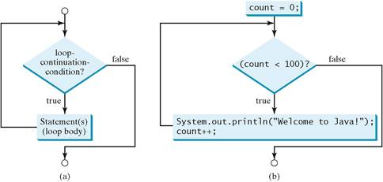
The loop for displaying Welcome to Java! a hundred times introduced in the preceding section is an example of a while loop. Its flowchart is shown in Figure 5.1b. The loop-continuation-condition is count < 100 and the loop body contains the following two statements:
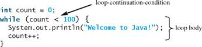
In this example, you know exactly how many times the loop body needs to be executed because the control variable count is used to count the number of executions. This type of loop is known as a counter-controlled loop.
<margin note>counter-controlled loop
<box>
Note
The loop-continuation-condition must always appear inside the parentheses. The braces enclosing the loop body can be omitted only if the loop body contains one or no statement.
Here is another example to help understand how a loop works.
<end box>
int sum = 0, i = 1;
while (i < 10) {
sum = sum + i;
i++;
}
System.out.println("sum is " + sum); // sum is 45
If i < 10 is true, the program adds i to sum. Variable i is initially set to 1, then is incremented to 2, 3, and up to 10. When i is 10, i < 10 is false, so the loop exits. Therefore, the sum is 1 + 2 + 3 + ... + 9 = 45.
What happens if the loop is mistakenly written as follows?
int sum = 0, i = 1;
while (i < 10) {
sum = sum + i;
}
This loop is infinite, because i is always 1 and i < 10 will always be true.
<box>
Note
Make sure that the loop-continuation-condition eventually becomes false so that the loop will terminate. A common programming error involves <KT>infinite loops</KT> (i. e., the loop runs forever). If your program takes an unusually long time to run and does not stop, it may have an infinite loop. If you are running the program from the command window, press CTRL+C to stop it.
<key term>infinite loop
<end box>
<box>
Caution
Programmers often make the mistake of executing a loop one more or less time. This is commonly known as the <KT>off-by-one error</KT>. For example, the following loop displays Welcome to Java 101 times rather than 100 times. The error lies in the condition, which should be count < 100 rather than count <= 100.
<key term>off-by-one error
<end box>
int count = 0;
while (count <= 100) {
System.out.println("Welcome to Java!");
count++;
}
Recall that Listing 3.1, AdditionQuiz.java, gives a program that prompts the user to enter an answer for a question on addition of two single digits. Using a loop, you can now rewrite the program to let the user repeatedly enter a new answer until it is correct, as shown in Listing 5.1.
Listing 5.1 RepeatAdditionQuiz.java
1 import java.util.Scanner;
2
3 public class RepeatAdditionQuiz {
4 public static void main(String[] args) {
5 int number1 = (int)(Math.random() * 10);
6 int number2 = (int)(Math.random() * 10);
7
8 // Create a Scanner
9 Scanner input = new Scanner(System.in);
10
11 System.out.print(
12 "What is " + number1 + " + " + number2 + "? ");
13 int answer = input.nextInt();
14
15 while (number1 + number2 != answer) {
16 System.out.print("Wrong answer. Try again. What is "
17 + number1 + " + " + number2 + "? ");
18 answer = input.nextInt();
19 }
20
21 System.out.println("You got it!");
22 }
23 }
<output>
What is 5 + 9? 12 <enter icon>
Wrong answer. Try again. What is 5 + 9? 34 <enter icon>
Wrong answer. Try again. What is 5 + 9? 14 <enter icon>
You got it!
<end output>
<margin note (line 5)>generate number1
<margin note (line 6)>generate number2
<margin note (line 11)>show question
<margin note (line 13)>get first answer
<margin note (line 15)>check answer
<margin note (line 18)>read an answer
<end listing 5.1>
The loop in lines 15–19 repeatedly prompts the user to enter an answer when number1 + number2 != answer is true. Once number1 + number2 != answer is false, the loop exits.
5.2.1 Case Study: Guessing Numbers
<video note>Guess a number
The problem is to guess what number a computer has in mind. You will write a program that randomly generates an integer between 0 and 100, inclusive. The program prompts the user to enter a number continuously until the number matches the randomly generated number. For each user input, the program tells the user whether the input is too low or too high, so the user can make the next guess intelligently. Here is a sample run:
<output>
Guess a magic number between 0 and 100
Enter your guess: 50 <enter icon>
Your guess is too high
Enter your guess: 25 <enter icon>
Your guess is too low
Enter your guess: 42 <enter icon>
Your guess is too high
Enter your guess: 39 <enter icon>
Yes, the number is 39<end output>
The magic number is between 0 and 100. To minimize the number of guesses, enter 50 first. If your guess is too high, the magic number is between 0 and 49. If your guess is too low, the magic number is between 51 and 100. So, you can eliminate half of the numbers from further consideration after one guess.
<margin note>intelligent guess
How do you write this program? Do you immediately begin coding? No. It is important to think before coding. Think how you would solve the problem without writing a program. You need first to generate a random number between 0 and 100, inclusive, then to prompt the user to enter a guess, and then to compare the guess with the random number.
<margin note>think before coding
It is a good practice to code incrementally one step at a time. For programs involving loops, if you don’t know how to write a loop right away, you may first write the code for executing the loop one time, and then figure out how to repeatedly execute the code in a loop. For this program, you may create an initial draft, as shown in Listing 5.2.
<margin note>code incrementally
Listing 5.2 GuessNumberOneTime.java
1 import java.util.Scanner;
2
3 public class GuessNumberOneTime {
4 public static void main(String[] args) {
5 // Generate a random number to be guessed
6 int number = (int)(Math.random() * 101);
7
8 Scanner input = new Scanner(System.in);
9 System.out.println("Guess a magic number between 0 and 100");
10
11 // Prompt the user to guess the number
12 System.out.print("\nEnter your guess: ");
13 int guess = input.nextInt();
14
15 if (guess == number)
16 System.out.println("Yes, the number is " + number);
17 else if (guess > number)
18 System.out.println("Your guess is too high");
19 else
20 System.out.println("Your guess is too low");
21 }
22 }
<margin note (line 6)>generate a number
<margin note (line 13)>enter a guess
<margin note (line 16)>correct guess?
<margin note (line 18)>too high?
<margin note (line 20)>too low?
<end listing 5.2>
When you run this program, it prompts the user to enter a guess only once. To let the user enter a guess repeatedly, you may wrap the code in lines 11–20 in a loop as follows:
while (true) {
// Prompt the user to guess the number
System.out.print("\nEnter your guess: ");
guess = input.nextInt();
if (guess == number)
System.out.println("Yes, the number is " + number);
else if (guess > number)
System.out.println("Your guess is too high");
else
System.out.println("Your guess is too low");
} // End of loop
This loop repeatedly prompts the user to enter a guess. However, this loop is not correct, because it never terminates. When guess matches number, the loop should end. So, the loop can be revised as follows:
while (guess != number) {
// Prompt the user to guess the number
System.out.print("\nEnter your guess: ");
guess = input.nextInt();
if (guess == number)
System.out.println("Yes, the number is " + number);
else if (guess > number)
System.out.println("Your guess is too high");
else
System.out.println("Your guess is too low");
} // End of loop
The complete code is given in Listing 5.3.
Listing 5.3 GuessNumber.java
1 import java.util.Scanner;
2
3 public class GuessNumber {
4 public static void main(String[] args) {
5 // Generate a random number to be guessed
6 int number = (int)(Math.random() * 101);
7
8 Scanner input = new Scanner(System.in);
9 System.out.println("Guess a magic number between 0 and 100");
10
11 int guess = -1;
12 while (guess != number) {
13 // Prompt the user to guess the number
14 System.out.print("\nEnter your guess: ");
15 guess = input.nextInt();
16
17 if (guess == number)
18 System.out.println("Yes, the number is " + number);
19 else if (guess > number)
20 System.out.println("Your guess is too high");
21 else
22 System.out.println("Your guess is too low");
23 } // End of loop
24 }
25 }
<margin note (line 6)>generate a number
<margin note (line 15)>enter a guess
<margin note (line 20)>too high?
<margin note (line 22)>too low?
<end listing 5.3>
<trace program>
|
line# |
number |
guess |
output |
||
|
6 |
39 |
|
|
||
|
11 |
|
–1 |
|
||
|
iteration
1 |
|
50 |
|
||
|
20 |
|
|
Your guess is too high |
||
|
iteration 2 |
|
25 |
|
||
|
22 |
|
|
Your guess is too low |
||
|
iteration
3 |
|
42 |
|
||
|
20 |
|
|
Your guess is too high |
||
|
iteration
4 |
|
39 |
|
||
|
18 |
|
|
Yes, the number is 39 |
<end trace program>
The program generates the magic number in line 6 and prompts the user to enter a guess continuously in a loop (lines 12–23). For each guess, the program checks whether the guess is correct, too high, or too low (lines 17–22). When the guess is correct, the program exits the loop (line 12). Note that guess is initialized to -1. Initializing it to a value between 0 and 100 would be wrong, because that could be the number to be guessed.
5.2.2 Loop Design Strategies
Writing a correct loop is not an easy task for novice programmers. Consider three steps when writing a loop.
Step 1: Identify the statements that need to be repeated.
Step 2: Wrap these statements in a loop like this:
while (true) {
Statements;
}
Step 3: Code the loop-continuation-condition and add appropriate statements for controlling the loop.
while (loop-continuation-condition) {
Statements;
Additional statements for controlling the loop;
}
5.2.3 Case Study: Multiple Subtraction Quiz
<video note>Multiple subtraction quiz
The Math subtraction learning tool program in Listing 3.3, SubtractionQuiz.java, generates just one question for each run. You can use a loop to generate questions repeatedly. How do you write the code to generate five questions? Follow the loop design strategy. First identify the statements that need to be repeated. These are the statements for obtaining two random numbers, prompting the user with a subtraction question, and grading the question. Second, wrap the statements in a loop. Third, add a loop control variable and the loop-continuation-condition to execute the loop five times.
Listing 5.4 gives a program that generates five questions and, after a student answers all five, reports the number of correct answers. The program also displays the time spent on the test and lists all the questions.
***PD: Please use the PDF file from the 9E. The format for the comment lines in the Word is incorrect. When producing the Word file from the PDF file, some mistakes were introduced. The mistakes are not consistent. Most of the Listings are fine. I spotted this here in Listing 5.4. Note that the color for the comment line is incorrect here, but it is correct in the 9E PDF file.
Listing 5.4 SubtractionQuizLoop.java
1 import java.util.Scanner;
2
3 public class SubtractionQuizLoop {
4 public static void main(String[] args) {
5 final int NUMBER_OF_QUESTIONS = 5; // Number of questions
6 int correctCount = 0; // Count the number of correct answers
7 int count = 0; // Count the number of questions
8 long startTime = System.currentTimeMillis();
9 String output = " "; // output string is initially empty
10 Scanner input = new Scanner(System.in);
11
12 while (count < NUMBER_OF_QUESTIONS) {
13 // 1. Generate two random single-digit integers
14 int number1 = (int)(Math.random() * 10);
15 int number2 = (int)(Math.random() * 10);
16
17 // 2. If number1 < number2, swap number1 with number2
18 if (number1 < number2) {
19 int temp = number1;
20 number1 = number2;
21 number2 = temp;
22 }
23
24 // 3. Prompt the student to answer "What is number1 – number2?"
25 System.out.print(
26 "What is " + number1 + " - " + number2 + "? ");
27 int answer = input.nextInt();
28
29 // 4. Grade the answer and display the result
30 if (number1 - number2 == answer) {
31 System.out.println("You are correct!");
32 correctCount++; // Increase the correct answer count
33 }
34 else
35 System.out.println("Your answer is wrong.\n" + number1
36 + " - " + number2 + " should be " + (number1 - number2));
37
38 // Increase the question count
39 count++;
40
41 output += "\n" + number1 + "-" + number2 + "=" + answer +
42 ((number1 - number2 == answer) ? " correct" : " wrong");
43 }
44
45 long endTime = System.currentTimeMillis();
46 long testTime = endTime - startTime;
47
48 System.out.println("Correct count is " + correctCount +
49 "\nTest time is " + testTime / 1000 + " seconds\n" + output);
50 }
51 }
<output>
What is 9 – 2? 7 <enter icon>
You are correct!
What is 3 – 0? 3 <enter icon>
You are correct!
What is 3 – 2? 1 <enter icon>
You are correct!
What is 7 – 4? 4 <enter icon>
Your answer is wrong.
7 – 4 should be 3
What is 7 – 5? 4 <enter icon>
Your answer is wrong.
7 – 5 should be 2
Correct count is 3
Test time is 1021 seconds
9–2=7 correct
3–0=3 correct
3–2=1 correct
7–4=4 wrong
7–5=4 wrong
<end output>
<margin note (line 8)>get start time
<margin note (line 12)>loop
<margin note (line 25)>display a question
<margin note (line 30)>grade an answer
<margin note (line 32)>increase correct count
<margin note (line39 )>increase control variable
<margin note (line 41)>prepare output
<margin note (line 43)>end loop
<margin note (line 45)>get end time
<margin note (line 46)>test time
<margin note (line 48)>display result
<end listing 5.4>
The program uses the control variable count to control the execution of the loop. count is initially 0 (line 7) and is increased by 1 in each iteration (line 39). A subtraction question is displayed and processed in each iteration. The program obtains the time before the test starts in line 8 and the time after the test ends in line 45, and computes the test time in line 46. The test time is in milliseconds and is converted to seconds in line 49.
5.2.4 Controlling a Loop with a Sentinel Value
Another common technique for controlling a loop is to designate a special value when reading and processing a set of values. This special input value, known as a <KT>sentinel value</KT>, signifies the end of the input. A loop that uses a sentinel value to control its execution is called a sentinel-controlled loop.
<key term>sentinel value
<margin note>sentinel-controlled loop
Listing 5.5 writes a program that reads and calculates the sum of an unspecified number of integers. The input 0 signifies the end of the input. Do you need to declare a new variable for each input value? No. Just use one variable named data (line 12) to store the input value and use a variable named sum (line 15) to store the total. Whenever a value is read, assign it to data and, if it is not zero, add it to sum (line 17).
Listing 5.5 SentinelValue.java
1 import java.util.Scanner;
2
3 public class SentinelValue {
4 /** Main method */
5 public static void main(String[] args) {
6 // Create a Scanner
7 Scanner input = new Scanner(System.in);
8
9 // Read an initial data
10 System.out.print(
11 "Enter an integer (the input ends if it is 0): ");
12 int data = input.nextInt();
13
14 // Keep reading data until the input is 0
15 int sum = 0;
16 while (data != 0) {
17 sum += data;
18
19 // Read the next data
20 System.out.print(
21 "Enter an integer (the input ends if it is 0): ");
22 data = input.nextInt();
23 }
24
25 System.out.println("The sum is " + sum);
26 }
27 }
<output>
Enter an integer (the input ends if it is 0): 2 <enter icon>
Enter an integer (the input ends if it is 0): 3 <enter icon>
Enter an integer (the input ends if it is 0): 4 <enter icon>
Enter an integer (the input ends if it is 0): 0 <enter icon>
The sum is 9
<end output>
<margin note (line 12)>input
<margin note (line 16)>loop
<margin note (line 23)>end of loop
<margin note (line 25)>display result
<end listing 5.5>
<trace program>
|
line# |
Data |
sum |
output |
||
|
12 |
2 |
|
|
||
|
15 |
|
0 |
|
||
|
iteration
1 |
|
2 |
|
||
|
22 |
3 |
|
|
||
|
iteration 2 |
|
5 |
|
||
|
22 |
4 |
|
|
||
|
iteration 3 |
|
9 |
|
||
|
22 |
0 |
|
|
||
|
25 |
|
|
The sum is 9 |
<end trace program>
If data is not 0, it is added to sum (line 17) and the next item of input data is read (lines 20–22). If data is 0, the loop body is no longer executed and the while loop terminates. The input value 0 is the sentinel value for this loop. Note that if the first input read is 0, the loop body never executes, and the resulting sum is 0.
<box>
Caution
Don’t use floating-point values for equality checking in a loop control. Because floating-point values are approximations for some values, using them could result in imprecise counter values and inaccurate results.
Consider the following code for computing 1 + 0.9 + 0.8 + ... + 0.1:
double item = 1; double sum = 0;
while (item != 0) { // No guarantee item will be 0
sum += item;
item -= 0.1;
}
System.out.println(sum);
Variable item starts with 1 and is reduced by 0.1 every time the loop body is executed. The loop should terminate when item becomes 0. However, there is no guarantee that item will be exactly 0, because the floating-point arithmetic is approximated. This loop seems okay on the surface, but it is actually an infinite loop.
<margin note>numeric error
<end box>
5.2.5 Input and Output Redirections
In the preceding example, if you have a large number of data to enter, it would be cumbersome to type from the keyboard. You can store the data separated by whitespaces in a text file, say input.txt, and run the program using the following command:
java SentinelValue < input.txt
This command is called <KT>input redirection</KT>. The program takes the input from the file input.txt rather than having the user type the data from the keyboard at runtime. Suppose the contents of the file are
<key term>input redirection
2 3 4 5 6 7 8 9 12 23 32
23 45 67 89 92 12 34 35 3 1 2 4 0
The program should get sum to be 518.
Similarly, there is <KT>output redirection</KT>, which sends the output to a file rather than displaying it on the console. The command for output redirection is:
<key term>output redirection
java ClassName > output.txt
Input and output redirection can be used in the same command. For example, the following command gets input from input.txt and sends output to output.txt:
java SentinelValue output.txt
Try running the program to see what contents are in output.txt.
<check point>
5.1 Analyze the following code. Is count < 100 always true, always false, or sometimes true or sometimes false at Point A, Point B, and Point C?
int count = 0;
while (count < 100) {
// Point A
System.out.println("Welcome to Java!");
count++;
// Point B
}
// Point C
5.2 What is wrong if guess is initialized to 0 in line 11 in Listing 5.3?
5.3 How many times are the following loop bodies repeated? What is the output of each loop?
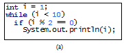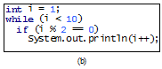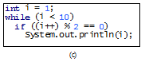
5.4 Suppose the input is 2 3 4 5 0. What is the output of the following code?
import java.util.Scanner;
public class Test {
public static void main(String[] args) {
Scanner input = new Scanner(System.in);
int number, max;
number = input.nextInt();
max = number;
while (number != 0) {
number = input.nextInt();
if (number > max)
max = number;
}
System.out.println("max is " + max);
System.out.println("number " + number);
}
}
5.5 What is the output of the following code? Explain the reason.
int x = 80000000;
while (x > 0)
x++;
System.out.println("x is " + x);
<end check point>
5.3 The do-while Loop
<key point>
A do-while loop is the same as a while loop except that it executes the loop body first and then checks the loop continuation condition.
<end key point>
The <KT>do-while loop</KT> is a variation of the while loop. Its syntax is:
<key terms>do-while loop
do {
// Loop body;
Statement(s);
} while (loop-continuation-condition);
Its execution flowchart is shown in Figure 5.2.
Figure 5.2
The do-while loop executes the loop body first, then checks the loop-continuation-condition to determine whether to continue or terminate the loop.
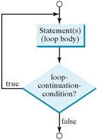
The loop body is executed first, and then the loop-continuation-condition is evaluated. If the evaluation is true, the loop body is executed again; if it is false, the do-while loop terminates. The difference between a while loop and a do-while loop is the order in which the loop-continuation-condition is evaluated and the loop body executed. You can write a loop using either the while loop or the do-while loop. Sometimes one is a more convenient choice than the other. For example, you can rewrite the while loop in <LINK>Listing 5.5 using a do-while loop, as shown in Listing 5.6.
Listing 5.6 TestDoWhile.java
1 import java.util.Scanner;
2
3 public class TestDoWhile {
4 /** Main method */
5 public static void main(String[] args) {
6 int data;
7 int sum = 0;
8
9 // Create a Scanner
10 Scanner input = new Scanner(System.in);
11
12 // Keep reading data until the input is 0
13 do {
14 // Read the next data
15 System.out.print(
16 "Enter an integer (the input ends if it is 0): ");
17 data = input.nextInt();
18
19 sum += data;
20 } while (data != 0);
21
22 System.out.println("The sum is " + sum);
23 }
24 }
<output>
Enter an integer (the input ends if it is 0): 3 <enter icon>
Enter an integer (the input ends if it is 0): 5 <enter icon>
Enter an integer (the input ends if it is 0): 6 <enter icon>
Enter an integer (the input ends if it is 0): 0 <enter icon>
The sum is 14
<end output>
<margin note (line 13)>loop
<margin note (line 20)>end loop
<end listing 5.6>
<box>
Tip
Use a do-while loop if you have statements inside the loop that must be executed at least once, as in the case of the do-while loop in the preceding TestDoWhile program. These statements must appear before the loop as well as inside it if you use a while loop.
<end box>
<check point>
5.6 Suppose the input is 2 3 4 5 0. What is the output of the following code?
import java.util.Scanner;
public class Test {
public static void main(String[] args) {
Scanner input = new Scanner(System.in);
int number, max;
number = input.nextInt();
max = number;
do {
number = input.nextInt();
if (number > max)
max = number;
} while (number != 0);
System.out.println("max is " + max);
System.out.println("number " + number);
}
}
5.7 What are the differences between a while loop and a do-while loop? Convert the following while loop into a do-while loop.
Scanner input = new Scanner(System.in);
int sum = 0;
System.out.println("Enter an integer " +
"(the input ends if it is 0)");
int number = input.nextInt();
while (number != 0) {
sum += number;
System.out.println("Enter an integer " +
"(the input ends if it is 0)");
number = input.nextInt();
}
<end check point>
<key point>
A for loop has a concise syntax for writing loops.
<end key point>
Often you write a loop in the following common form:
i = initialValue; // Initialize loop control variable
while (i < endValue)
// Loop body
...
i++; // Adjust loop control variable
}
A for loop can be used to simplify the preceding loop as:
for (i = initialValue; i < endValue; i++)
// Loop body
...
}
In general, the syntax of a <KT>for loop</KT> is:
for (initial-action; loop-continuation-condition;
action-after-each-iteration) {
// Loop body;
Statement(s);
}
<key terms>for loop
The flowchart of the for loop is shown in Figure 5.3a.
Figure 5.3
A for loop performs an initial action once, then repeatedly executes the statements in the loop body, and performs an action after an iteration when the loop-continuation-condition evaluates to true.
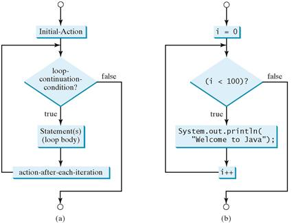
The for loop statement starts with the keyword for, followed by a pair of parentheses enclosing the control structure of the loop. This structure consists of initial-action, loop-continuation-condition, and action-after-each-iteration. The control structure is followed by the loop body enclosed inside braces. The initial-action, loop-continuation-condition, and action-after-each-iteration are separated by semicolons.
A for loop generally uses a variable to control how many times the loop body is executed and when the loop terminates. This variable is referred to as a control variable. The initial-action often initializes a control variable, the action-after-each-iteration usually increments or decrements the control variable, and the loop-continuation-condition tests whether the control variable has reached a termination value. For example, the following for loop prints Welcome to Java! a hundred times:
<margin note>control variable
int i;
for (i = 0; i < 100; i++) {
System.out.println("Welcome to Java!");
}
The flowchart of the statement is shown in Figure 5.3b. The for loop initializes i to 0, then repeatedly executes the println statement and evaluates i++ while i is less than 100.
The initial-action, i = 0, initializes the control variable, i. The loop-continuation-condition, i < 100, is a Boolean expression. The expression is evaluated right after the initialization and at the beginning of each iteration. If this condition is true, the loop body is executed. If it is false, the loop terminates and the program control turns to the line following the loop.
<margin note>initial-action
The action-after-each-iteration, i++, is a statement that adjusts the control variable. This statement is executed after each iteration and increments the control variable. Eventually, the value of the control variable should force the loop-continuation-condition to become false; otherwise, the loop is infinite.
<margin note>action-after-each-iteration
The loop control variable can be declared and initialized in the for loop. Here is an example:
for (int i = 0; i < 100; i++) {
System.out.println("Welcome to Java!");
}
If there is only one statement in the loop body, as in this example, the braces can be omitted.
<margin note>omitting braces
<box>
Tip
The control variable must be declared inside the control structure of the loop or before the loop. If the loop control variable is used only in the loop, and not elsewhere, it is a good programming practice to declare it in the initial-action of the for loop. If the variable is declared inside the loop control structure, it cannot be referenced outside the loop. In the preceding code, for example, you cannot reference i outside the for loop, because it is declared inside the for loop.
<margin note>declare control variable
<end box>
<box>
Note
The initial-action in a for loop can be a list of zero or more comma-separated variable declaration statements or assignment expressions. For example:
<margin note>for loop variations
for (int i = 0, j = 0; i + j < 10; i++, j++) {
// Do something
}
The action-after-each-iteration in a for loop can be a list of zero or more comma-separated statements. For example:
for (int i = 1; i < 100; ); System.out.println(i), i++) ;
This example is correct, but it is a bad example, because it makes the code difficult to read. Normally, you declare and initialize a control variable as an initial action and increment or decrement the control variable as an action after each iteration.
<end box>
<box>
Note
If the loop-continuation-condition in a for loop is omitted, it is implicitly true. Thus the statement given below in (a), which is an infinite loop, is the same as in (b). To avoid confusion, though, it is better to use the equivalent loop in (c).
<end box>
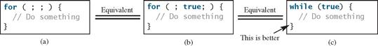
<check point>
5.8 Do the following two loops result in the same value in sum?
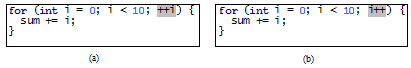
5.9 What are the three parts of a for loop control? Write a for loop that prints the numbers from 1 to 100.
5.10 Suppose the input is 2 3 4 5 0. What is the output of the following code?
import java.util.Scanner;
public class Test {
public static void main(String[] args) {
Scanner input = new Scanner(System.in);
int number, sum = 0, count;
for (count = 0; count < 5; count++) {
number = input.nextInt();
sum += number;
}
System.out.println("sum is " + sum);
System.out.println("count is " + count);
}
}
5.11 What does the following statement do?
for ( ; ; ) {
// Do something
}
5.12 If a variable is declared in a for loop control, can it be used after the loop exits?
5.13 Convert the following for loop statement to a while loop and to a do-while loop:
long sum = 0;
for (int i = 0; i <= 1000; i++)
sum = sum + i;
5.14 Count the number of iterations in the following loops.
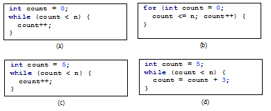
<end check point>
<key point>
You can use a for loop, a while loop, or a do-while loop, whichever is convenient.
<end key point>
The while loop and for loop are called <KT>pretest loops</KT> because the continuation condition is checked before the loop body is executed. The do-while loop is called a <KT>posttest loop</KT> because the condition is checked after the loop body is executed. The three forms of loop statements—while, do-while, and for—are expressively equivalent; that is, you can write a loop in any of these three forms. For example, a while loop in (a) in the following figure can always be converted into the for loop in (b).
<key term>pretest loop
<key term>posttest loop
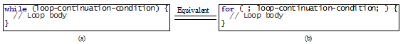
A for loop in (a) in the next figure can generally be converted into the while loop in (b) except in certain special cases (see Checkpoint Question 5.25 for such a case).

Use the loop statement that is most intuitive and comfortable for you. In general, a for loop may be used if the number of repetitions is known in advance, as, for example, when you need to display a message a hundred times. A while loop may be used if the number of repetitions is not fixed, as in the case of reading the numbers until the input is 0. A do-while loop can be used to replace a while loop if the loop body has to be executed before the continuation condition is tested.
<box>
Caution
Adding a semicolon at the end of the for clause before the loop body is a common mistake, as shown below in (a). In (a), the semicolon signifies the end of the loop prematurely. The loop body is actually empty, as shown in (b). (a) and (b) are equivalent. Both are incorrect.
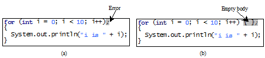
Similarly, the loop in (c) is also wrong. (c) is equivalent to (d). Both are incorrect.
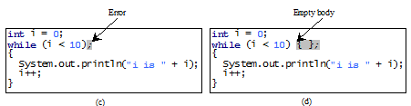
These errors often occur when you use the next-line block style. Using the end-of-line block style can avoid errors of this type.
In the case of the do-while loop, the semicolon is needed to end the loop.
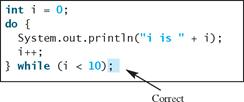
<end box>
<check point>
5.15 Can you convert a for loop to a while loop? List the advantages of using for loops.
5.16 Can you always convert a while loop into a for loop? Convert the following while loop into a for loop.
int i = 1;
int sum = 0;
while (sum < 10000) {
sum = sum + i;
i++;
}
5.17 Identify and fix the errors in the following code:
1 public class Test {
2 public void main(String[] args) {
3 for (int i = 0; i < 10; i++);
4 sum += i;
5
6 if (i < j);
7 System.out.println(i)
8 else
9 System.out.println(j);
10
11 while (j < 10);
12 {
13 j++;
14 }
15
16 do {
17 j++;
18 } while (j < 10)
19 }
20 }
5.18 What is wrong with the following programs?
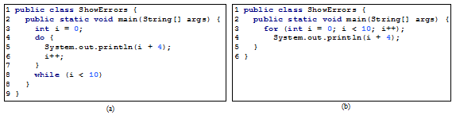
<end check point>
<key point>
A loop can be nested inside another loop.
<end key point>
<KT>Nested loops</KT> consist of an outer loop and one or more inner loops. Each time the outer loop is repeated, the inner loops are reentered, and started anew.
<key term>nested loop
Listing 5.7 presents a program that uses nested for loops to display a multiplication table.
Listing 5.7 MultiplicationTable.java
1 public class MultiplicationTable {
2 /** Main method */
3 public static void main(String[] args) {
4 // Display the table heading
5 System.out.println(" Multiplication Table");
6
7 // Display the number title
8 System.out.print(" ");
9 for (int j = 1; j <= 9; j++)
10 System.out.print(" " + j);
11
12 System.out.println("\n———————————————————————————————————————");
13
14 // Display table body
15 for (int i = 1; i <= 9; i++) {
16 System.out.print(i + " | ");
17 for (int j = 1; j <= 9; j++) {
18 // Display the product and align properly
19 System.out.printf("%4d", i * j);
20 }
21 System.out.println();
22 }
23 }
24 }
<output>
Multiplication Table
1 2 3 4 5 6 7 8 9
———————————————————————————————————————-
1 | 1 2 3 4 5 6 7 8 9
2 | 2 4 6 8 10 12 14 16 18
3 | 3 6 9 12 15 18 21 24 27
4 | 4 8 12 16 20 24 28 32 36
5 | 5 10 15 20 25 30 35 40 45
6 | 6 12 18 24 30 36 42 48 54
7 | 7 14 21 28 35 42 49 56 63
8 | 8 16 24 32 40 48 56 64 72
9 | 9 18 27 36 45 54 63 72 81
<end output>
<margin note (line 5)>table title
<margin note (line 15)>outer loop
<margin note (line 17)>inner loop
<end listing 5.7>
The program displays a title (line 5) on the first line in the output. The first for loop (lines 9–10) displays the numbers 1 through 9 on the second line. A dashed (-) line is displayed on the third line (line 12).
The next loop (lines 15–22) is a nested for loop with the control variable i in the outer loop and j in the inner loop. For each i, the product i * j is displayed on a line in the inner loop, with j being 1, 2, 3, ..., 9.
<box>
Note
Be aware that a nested loop may take a long time to run. Consider the following loop nested in three levels:
for (int i = 0; i < 10000; i++)
for (int j = 0; j < 10000; j++)
for (int k = 0; k < 10000; k++)
Perform an action
The action is performed one trillion times. If it takes 1 microsecond to perform the action, the total time to run the loop would be more than 277 hours. Note that 1 microsecond is one millionth (10–6) of a second.
<end box>
<check point>
5.19 How many times is the println statement executed?
for (int i = 0; i < 10; i++)
for (int j = 0; j < i; j++)
System.out.println(i * j)
5.20 Show the output of the following programs. (Hint: Draw a table and list the variables in the columns to trace these programs.)
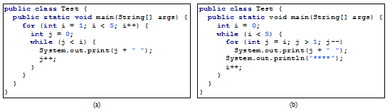
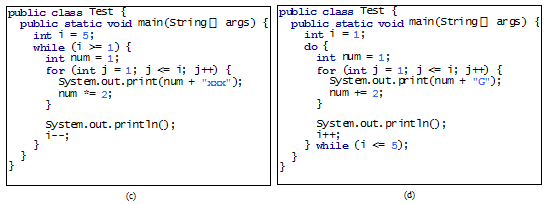
<end check point>
<key point>
Using floating-point numbers in the loop continuation condition may cause numeric errors.
<end key point>
<video note>Minimize numeric errors
Numeric errors involving floating-point numbers are inevitable, because floating-point numbers are represented in approximation in computers by nature. This section discusses how to minimize such errors through an example.
Listing 5.8 presents an example summing a series that starts with 0.01 and ends with 1.0. The numbers in the series will increment by 0.01, as follows: 0.01 + 0.02 + 0.03, and so on.
Listing 5.8 TestSum.java
1 public class TestSum {
2 public static void main(String[] args) {
3 // Initialize sum
4 float sum = 0;
5
6 // Add 0.01, 0.02, ..., 0.99, 1 to sum
7 for (float i = 0.01f; i <= 1.0f; i = i + 0.01f)
8 sum += i;
9
10 // Display result
11 System.out.println("The sum is " + sum);
12 }
13 }
<output>
The sum is 50.499985
<end output>
<margin note (line 7)>loop
<end listing 5.8>
The for loop (lines 7–8) repeatedly adds the control variable i to sum. This variable, which begins with 0.01, is incremented by 0.01 after each iteration. The loop terminates when i exceeds 1.0.
The for loop initial action can be any statement, but it is often used to initialize a control variable. From this example, you can see that a control variable can be a float type. In fact, it can be any data type.
<margin note>double precision
The exact sum should be 50.50, but the answer is 50.499985. The result is imprecise because computers use a fixed number of bits to represent floating-point numbers, and thus they cannot represent some floating-point numbers exactly. If you change float in the program to double, as follows, you should see a slight improvement in precision, because a double variable holds 64 bits, whereas a float variable holds 32 bits.
// Initialize sum
double sum = 0;
// Add 0.01, 0.02, ..., 0.99, 1 to sum
for (double i = 0.01; i <= 1.0; i = i + 0.01)
sum += i;
However, you will be stunned to see that the result is actually 49.50000000000003. What went wrong? If you display i for each iteration in the loop, you will see that the last i is slightly larger than 1 (not exactly 1). This causes the last i not to be added into sum. The fundamental problem is that the floating-point numbers are represented by approximation. To fix the problem, use an integer count to ensure that all the numbers are added to sum. Here is the new loop:
<margin note>numeric error
double currentValue = 0.01;
for (int count = 0; count < 100; count++) {
sum += currentValue;
currentValue += 0.01;
}
After this loop, sum is 50.50000000000003. This loop adds the numbers from smallest to biggest. What happens if you add numbers from biggest to smallest (i.e., 1.0, 0.99, 0.98, . . . , 0.02, 0.01 in this order) as follows:
double currentValue = 1.0;
for (int count = 0; count < 100; count++) {
sum += currentValue;
currentValue -= 0.01;
}
After this loop, sum is 50.49999999999995. Adding from biggest to smallest is less accurate than adding from smallest to biggest. This phenomenon is an artifact of the finite-precision arithmetic. Adding a very small number to a very big number can have no effect if the result requires more precision than the variable can store. For example, the inaccurate result of 100000000.0 + 0.000000001 is 100000000.0. To obtain more accurate results, carefully select the order of computation. Adding smaller numbers before bigger numbers is one way to minimize errors.
<margin note>avoiding numeric error
<key point>
Loops are fundamental in programming. The ability to write loops is essential in learning Java programming.
<end key point>
If you can write programs using loops, you know how to program! For this reason, this section presents four additional examples of solving problems using loops.
5.8.1 Case Study: Finding the Greatest Common Divisor
The greatest common divisor (gcd) of the two integers 4 and 2 is 2. The greatest common divisor of the two integers 16 and 24 is 8. How would you write this program to find the greatest common divisor? Would you immediately begin to write the code? No. It is important to <KT>think before you code</KT>. Thinking enables you to generate a logical solution for the problem without concern about how to write the code.
<margin note>think before you code
Let the two input integers be n1 and n2. You know that number 1 is a common divisor, but it may not be the greatest common divisor. So, you can check whether k (for k 2, 3, 4, and so on) is a common divisor for n1 and n2, until k is greater than n1 or n2. Store the common divisor in a variable named gcd. Initially, gcd is 1. Whenever a new common divisor is found, it becomes the new gcd. When you have checked all the possible common divisors from 2 up to n1 or n2, the value in variable gcd is the greatest common divisor.
<margin note>logical solution
Once you have a logical solution, type the code to translate the solution into a Java program as follows:
<margin note>gcd
int gcd = 1; // Initial gcd is 1
int k = 2; // Possible gcd
while (k <= n1 && k <= n2) {
if (n1 % k == 0 && n2 % k == 0)
gcd = k; // Update gcd
k++; // Next possible gcd
}
// After the loop, gcd is the greatest common divisor for n1 and n2
Listing 5.9 presents the program that prompts the user to enter two positive integers and finds their greatest common divisor.
Listing 5.9 GreatestCommonDivisor.java
1 import java.util.Scanner;
2
3 public class GreatestCommonDivisor {
4 /** Main method */
5 public static void main(String[] args) {
6 // Create a Scanner
7 Scanner input = new Scanner(System.in);
8
9 // Prompt the user to enter two integers
10 System.out.print("Enter first integer: ");
11 int n1 = input.nextInt();
12 System.out.print("Enter second integer: ");
13 int n2 = input.nextInt();
14
15 int gcd = 1; // Initial gcd is 1
16 int k = 2; // Possible gcd
17 while (k <= n1 && k <= n2) {
18 if (n1 % k == 0 && n2 % k == 0)
19 gcd = k; // Update gcd
20 k++;
21 }
22
23 System.out.println("The greatest common divisor for " + n1 +
24 " and " + n2 + " is " + gcd);
25 }
26 }
<output>
Enter first integer: 125 <enter icon>
Enter second integer: 2525 <enter icon>
The greatest common divisor for 125 and 2525 is 25
<end output>
<margin note (line 11)>input
<margin note (line 13)>input
<margin note (line 15)>gcd
<margin note (line 18)>check divisor
<margin note (line 23)>output
<end listing 5.9>
Translating a logical solution to Java code is not unique. For example, you could use a for loop to rewrite the code as follows:
<key term>think before you type
for (int k = 2; k <= n1 && k <= n2; k++) {
if (n1 % k == 0 && n2 % k == 0)
gcd = k;
}
A problem often has multiple solutions, and the gcd problem can be solved in many ways. Programming Exercise 5.14 suggests another solution. A more efficient solution is to use the classic Euclidean algorithm (see Section 22.6).
<margin note>multiple solutions
You might think that a divisor for a number n1 cannot be greater than n1 / 2 and would attempt to improve the program using the following loop:
<margin note>erroneous solutions
for (int k = 2; k <= n1 / 2 && k <= n2 / 2; k++) {
if (n1 % k == 0 && n2 % k == 0)
gcd = k;
}
This revision is wrong. Can you find the reason? See Checkpoint Question 5.21 for the answer.
5.8.2 Case Study: Predicting the Future Tuition
Suppose that the tuition for a university is $10,000 this year and tuition increases 7% every year. In how many years will the tuition be doubled?
Before you can write a program to solve this problem, first consider how to solve it by hand. The tuition for the second year is the tuition for the first year * 1.07. The tuition for a future year is the tuition of its preceding year * 1.07. Thus, the tuition for each year can be computed as follows:
<margin note>think before you code
double tuition = 10000; int year = 0; // Year 0
tuition = tuition * 1.07; year++; // Year 1
tuition = tuition * 1.07; year++; // Year 2
tuition = tuition * 1.07; year++; // Year 3
...
Keep computing the tuition for a new year until it is at least 20000. By then you will know how many years it will take for the tuition to be doubled. You can now translate the logic into the following loop:
double tuition = 10000; // Year 0
int year = 0;
while (tuition < 20000) {
tuition = tuition * 1.07;
year++;
}
The complete program is shown in Listing 5.10.
Listing 5.10 FutureTuition.java
1 public class FutureTuition {
2 public static void main(String[] args) {
3 double tuition = 10000; // Year 0
4 int year = 0;
5 while (tuition < 20000) {
6 tuition = tuition * 1.07;
7 year++;
8 }
9
10 System.out.println("Tuition will be doubled in "
11 + year + " years");
12 System.out.printf("Tuition will be $%.2f in %1d years",
13 tuition, year);
14 }
15 }
<output>
Tuition will be doubled in 11 years
Tuition will be $21048.52 in 11 years
<end output>
<margin note (line 5)>loop
<margin note (line 6)>next year’s tuition
<end listing 5.10>
The while loop (lines 5–8) is used to repeatedly compute the tuition for a new year. The loop terminates when the tuition is greater than or equal to 20000.
5.8.3 Case Study: Converting Decimals to Hexadecimals
Hexadecimals are often used in computer systems programming (see Appendix F for an introduction to number systems). How do you convert a decimal number to a hexadecimal number? To convert a decimal number d to a hexadecimal number is to find the hexadecimal digits hn, hn−1, hn−2, … , h2, h1, and h0 such that
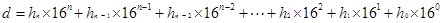
These hexadecimal digits can be found by successively dividing d by 16 until the quotient is 0. The remainders are h0, h1, h2, … , hn−2, hn−1, and hn. The hexadecimal digits include the decimal digits 0, 1, 2, 3, 4, 5, 6, 7, 8, and 9, plus A, which is the decimal value 10; B, which is the decimal value 11; C, which is 12; D, which is 13; E, which is 14; and F, which is 15.
For example, the decimal number 123 is 7B in hexadecimal. The conversion is done as follows. Divide 123 by 16. The remainder is 11 (B in hexadecimal) and the quotient is 7. Continue divide 7 by 16. The remainder is 7 and the quotient is 0. Therefore 7B is the hexadecimal number for 123.
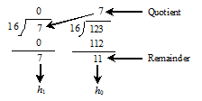
Listing 5.11 gives a program that prompts the user to enter a decimal number and converts it into a hex number as a string.
Listing 5.11 Dec2Hex.java
1 import java.util.Scanner;
2 3 public class Dec2Hex {
4 /** Main method */
5 public static void main(String[] args) {
6 // Create a Scanner
7 Scanner input = new Scanner(System.in);
8 9 // Prompt the user to enter a decimal integer
10 System.out.print("Enter a decimal number: ");
11 int decimal = input.nextInt();
12 13 // Convert decimal to hex
14 String hex = "";
15 16 while (decimal != 0) {
17 int hexValue = decimal % 16;
18 19 // Convert a decimal value to a hex digit
20 char hexDigit = (hexValue <= 9 && hexValue >= 0) ?
21 (char)(hexValue + '0') : (char)(hexValue - 10 + 'A');
22 23 hex = hexDigit + hex;24 decimal = decimal / 16;
25 } 26 27 System.out.println("The hex number is " + hex);
28 } 29 }
<output>
Enter a decimal number: 1234 <enter icon>
The hex number is 4D2
<end output>
<margin note (line 11)>input decimal
<margin note (line 14)>decimal to hex
<margin note (line 27)>get a hex char
<margin note (line 35)>get a letter
<end listing 5.11>
<trace program>
|
line# |
decimal |
hex |
hexValue |
hexDigit |
||
|
14 |
1234 |
"" |
|
|
||
|
iteration
1 |
|
|
2 |
|
||
|
23 |
|
"2" |
|
2 |
||
|
24 |
77 |
|
|
|
||
|
iteration
2 |
|
|
13 |
|
||
|
23 |
|
"D2" |
|
D |
||
|
24 |
4 |
|
|
|
||
|
iteration
3 |
|
|
4 |
|
||
|
23 |
|
"4D2" |
|
4 |
||
|
24 |
0 |
|
|
|
<end trace program>
The program prompts the user to enter a decimal integer (line 11), converts it to a hex number as a string (lines 14–25), and displays the result (line 27). To convert a decimal to a hex number, the program uses a loop to successively divide the decimal number by 16 and obtain its remainder (line 17). The remainder is converted into a hex character (lines 20–21). The character is then appended to the hex string (line 23). The hex string is initially empty (line 14). Divide the decimal number by 16 to remove a hex digit from the number (line 24). The loop ends when the remaining decimal number becomes 0.
The program converts a hexValue between 0 and 15 into a hex character. If hexValue is between 0 and 9, it is converted to (char)(hexValue + '0') (line 21). Recall that when adding a character with an integer, the character’s Unicode is used in the evaluation. For example, if hexValue is 5, (char)(hexValue + '0') returns 5. Similarly, if hexValue is between 10 and 15, it is converted to (char)(hexValue - 10 + 'A') (line 21). For instance, if hexValue is 11, (char)(hexValue - 10 + 'A') returns B.
<check point>
5.21 Will the program work if n1 and n2 are replaced by n1 / 2 and n2 / 2 in line 17 in <LINK>Listing 5.9?
5.22 In Listing 5.11, why is it wrong if you change the code (char)(hexValue + '0') to hexValue + '0' in line 21?
5.23 In Listing 5.11, how many times the loop body is executed for a decimal number 245 and how many times the loop body is executed for a decimal number 3245?
<end check point>
5.9 Keywords break and continue
<key point>
The break and continue keywords provide additional controls in a loop.
<end key point>
<box>
Pedagogical Note
Two keywords, <KT>break</KT> and continue, can be used in loop statements to provide additional controls. Using break and continue can simplify programming in some cases. Overusing or improperly using them, however, can make programs difficult to read and debug. (Note to instructors: You may skip this section without affecting students’ understanding of the rest of the book.)
<end box>
You have used the keyword break in a switch statement. You can also use break in a loop to immediately terminate the loop. Listing 5.12 presents a program to demonstrate the effect of using break in a loop.
<key terms>break statement
Listing 5.12 TestBreak.java
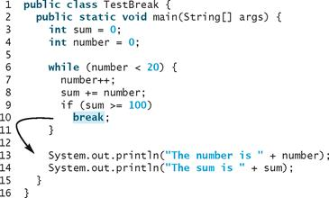
<output>
The number is 14
The sum is 105
<end output>
<margin note (line 10)>break
<end listing 5.12>
The program in Listing 5.12 adds integers from 1 to 20 in this order to sum until sum is greater than or equal to 100. Without the if statement (line 9), the program calculates the sum of the numbers from 1 to 20. But with the if statement, the loop terminates when sum becomes greater than or equal to 100. Without the if statement, the output would be:
<output>
The number is 20
The sum is 210
<end output>
You can also use the <KT>continue</KT> keyword in a loop. When it is encountered, it ends the current iteration and program control goes to the end of the loop body. In other words, continue breaks out of an iteration while the break keyword breaks out of a loop. Listing 5.13 presents a program to demonstrate the effect of using continue in a loop.
<key terms>continue statement
Listing 5.13 TestContinue.java
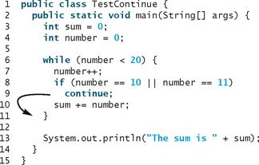
<output>
The sum is 189
<end output>
<margin note (line 9)>continue
<end listing 5.13>
The program in Listing 5.13 adds integers from 1 to 20 except 10 and 11 to sum. With the if statement in the program (line 8), the continue statement is executed when number becomes 10 or 11. The continue statement ends the current iteration so that the rest of the statement in the loop body is not executed; therefore, number is not added to sum when it is 10 or 11. Without the if statement in the program, the output would be as follows:
<output>
The sum is 210
<end output>
In this case, all of the numbers are added to sum, even when number is 10 or 11. Therefore, the result is 210, which is 21 more than it was with the if statement.
<box>
Note
The continue statement is always inside a loop. In the while and do-while loops, the loop-continuation-condition is evaluated immediately after the continue statement. In the for loop, the action-after-each-iteration is performed, then the loop-continuation-condition is evaluated, immediately after the continue statement.
<end box>
You can always write a program without using break or continue in a loop (see Checkpoint Question 5.26). In general, though, using break and continue is appropriate if it simplifies coding and makes programs easier to read.
Suppose you need to write a program to find the smallest factor other than 1 for an integer n (assume n >= 2). You can write a simple and intuitive code using the break statement as follows:
int factor = 2;
while (factor <= n) {
if (n % factor == 0)
break;
factor++;
}
System.out.println("The smallest factor other than 1 for "
+ n + " is " + factor);
You may rewrite the code without using break as follows:
boolean found = false;
int factor = 2;
while (factor <= n && !found) {
if (n % factor == 0)
found = true;
else
factor++;
}
System.out.println("The smallest factor other than 1 for "
+ n + " is " + factor);
Obviously, the break statement makes this program simpler and easier to read in this case. However, you should use break and continue with caution. Too many break and continue statements will produce a loop with many exit points and make the program difficult to read.
<box>
Note
Some programming languages have a goto statement. The goto statement indiscriminately transfers control to any statement in the program and executes it. This makes your program vulnerable to errors. The break and continue statements in Java are different from goto statements. They operate only in a loop or a switch statement. The break statement breaks out of the loop, and the continue statement breaks out of the current iteration in the loop.
<margin note>goto
<end box>
<box>
NOTE
Programming is a creative endeavor. There are many different ways to write code. In fact, you can find a smallest factor using a rather simple code as follows:
int factor = 2;
while (factor <= n && n % factor != 0)
factor++;
<endbox>
<check point>
5.24 What is the keyword break for? What is the keyword continue for? Will the following programs terminate? If so, give the output.
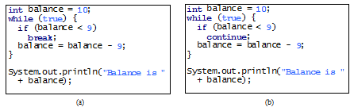
5.25 The for loop on the left is converted into the while loop on the right. What is wrong? Correct it.
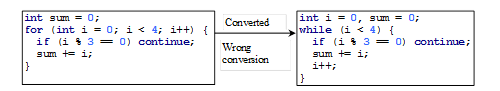
5.26 Rewrite the programs TestBreak and TestContinue in Listings 5.12 and 5.13 without using break and continue.
5.27 After the break statement in (a) is executed in the following loop, which statement is executed? Show the output. After the continue statement in (b) is executed in the following loop, which statement is executed? Show the output.
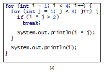 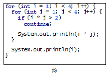
5.10 Case Study: Checking Palindromes
<key point>
This section presents a program that checks whether a string is a palindrome.
<end key point>
<video note>Check palindrome
A string is a palindrome if it reads the same forward and backward. The words “mom,” “dad,” and “noon,” for instance, are all palindromes.
The problem is to write a program that prompts the user to enter a string and reports whether the string is a palindrome. One solution is to check whether the first character in the string is the same as the last character. If so, check whether the second character is the same as the second-to-last character. This process continues until a mismatch is found or all the characters in the string are checked, except for the middle character if the string has an odd number of characters.
<margin note>think before you code
Listing 5.14 gives the program.
Listing 5.14 Palindrome.java
1 import java.util.Scanner;
2
3 public class Palindrome {
4 /** Main method */
5 public static void main(String[] args) {
6 // Create a Scanner
7 Scanner input = new Scanner(System.in);
8 9 // Prompt the user to enter a string
10 System.out.print("Enter a string: ");
11 String s = input.nextLine(); 12 13 // The index of the first character in the string
14 int low = 0;
15 16 // The index of the last character in the string
17 int high = s.length() - 1;
18 19 boolean isPalindrome = true;
20 while (low < high) {
21 if (s.charAt(low) != s.charAt(high)) {
22 isPalindrome = false;
23 break;
24 } 25 26 low++; 27 high--; 28 } 29 30 if (isPalindrome)
31 System.out.println(s + " is a palindrome");
32 else
33 System.out.println(s + " is not a palindrome");
34 } 35 }
<output>
Enter a string: noon <enter icon>
noon is a palindrome
<end output>
<output>
Enter a string: moon <enter icon>
moon is not a palindrome
<end output>
<margin note (line 11)>input string
<margin note (line 14)>low index
<margin note (line 17)>high index
<margin note (line 26)>update indices
<end Listing 5.14>
The program uses two variables, low and high, to denote the position of the two characters at the beginning and the end in a string s (lines 14, 17). Initially, low is 0 and high is s.length() – 1. If the two characters at these positions match, increment low by 1 and decrement high by 1 (lines 26–27). This process continues until (low >= high) or a mismatch is found (line 21).
The program uses a boolean variable isPalindrome to denote whether the string s is palindrome. Initially, it is set to true (line 19). When a mismatch is discovered (line 21), isPalindrome is to false (line 22) and the loop is terminated with a break statement (line 23).
5.11 Case Study: Displaying Prime Numbers
<key point>
This section presents a program that displays the first fifty prime numbers in five lines, each containing ten numbers.
<end key point>
An integer greater than 1 is prime if its only positive divisor is 1 or itself. For example, 2, 3, 5, and 7 are prime numbers, but 4, 6, 8, and 9 are not.
The problem is to display the first 50 prime numbers in five lines, each of which contains ten numbers. The problem can be broken into the following tasks:
§ Determine whether a given number is prime.
§ For number = 2, 3, 4, 5, 6, ..., test whether it is prime.
§ Count the prime numbers.
- Display each prime number, and display ten numbers per line.
Obviously, you need to write a loop and repeatedly test whether a new number is prime. If the number is prime, increase the count by 1. The count is 0 initially. When it reaches 50, the loop terminates.
Here is the algorithm for the problem:
Set the number of prime numbers to be printed as
a constant NUMBER_OF_PRIMES;
Use count to track the number of prime numbers and
set an initial count to 0;
Set an initial number to 2;
while (count < NUMBER_OF_PRIMES) {
Test whether number is prime;
if number is prime {
Display the prime number and increase the count;
}
Increment number by 1;
}
To test whether a number is prime, check whether it is divisible by 2, 3, 4, and so on up to number/2. If a divisor is found, the number is not a prime. The algorithm can be described as follows:
Use a boolean variable isPrime to denote whether
the number is prime; Set isPrime to true initially;
for (int divisor = 2; divisor <= number / 2; divisor++) {
if (number % divisor == 0) {
Set isPrime to false
Exit the loop;
}
}
The complete program is given in Listing 5.15.
Listing 5.15 PrimeNumber.java
1 public class PrimeNumber {
2 public static void main(String[] args) {
3 final int NUMBER_OF_PRIMES = 50; // Number of primes to display
4 final int NUMBER_OF_PRIMES_PER_LINE = 10; // Display 10 per line
5 int count = 0; // Count the number of prime numbers
6 int number = 2; // A number to be tested for primeness
7
8 System.out.println("The first 50 prime numbers are \n");
9
10 // Repeatedly find prime numbers
11 while (count < NUMBER_OF_PRIMES) {
12 // Assume the number is prime
13 boolean isPrime = true; // Is the current number prime?
14
15 // Test whether number is prime
16 for (int divisor = 2; divisor <= number / 2; divisor++) {
17 if (number % divisor == 0) { // If true, number is not prime
18 isPrime = false; // Set isPrime to false
19 break; // Exit the for loop
20 }
21 }
22
23 // Display the prime number and increase the count
24 if (isPrime) {
25 count++; // Increase the count
26
27 if (count % NUMBER_OF_PRIMES_PER_LINE == 0) {
28 // Display the number and advance to the new line
29 System.out.println(number);
30 }
31 else
32 System.out.print(number + " ");
33 }
34
35 // Check if the next number is prime
36 number++;
37 }
38 }
39 }
<output>
The first 50 prime numbers are
2 3 5 7 11 13 17 19 23 29
31 37 41 43 47 53 59 61 67 71
73 79 83 89 97 101 103 107 109 113
127 131 137 139 149 151 157 163 167 173
179 181 191 193 197 199 211 223 227 229
<end output>
<margin note (line 11)>count prime numbers
<margin note (line 16)>check primeness
<margin note (line 19)>exit loop
<margin note (line 24)>display if prime
<end listing 5.15>
This is a complex program for novice programmers. The key to developing a programmatic solution for this problem, and for many other problems, is to break it into subproblems and develop solutions for each of them in turn. Do not attempt to develop a complete solution in the first trial. Instead, begin by writing the code to determine whether a given number is prime, then expand the program to test whether other numbers are prime in a loop.
<margin note>subproblem
To determine whether a number is prime, check whether it is divisible by a number between 2 and number/2 inclusive (lines 16–21). If so, it is not a prime number (line 18); otherwise, it is a prime number. For a prime number, display it. If the count is divisible by 10 (lines 27–30), advance to a new line. The program ends when the count reaches 50.
The program uses the break statement in line 19 to exit the for loop as soon as the number is found to be a nonprime. You can rewrite the loop (lines 16–21) without using the break statement, as follows:
for (int divisor = 2; divisor <= number / 2 && isPrime;
divisor++) {
// If true, the number is not prime
if (number % divisor == 0) {
// Set isPrime to false, if the number is not prime
isPrime = false;
}
}
However, using the break statement makes the program simpler and easier to read in this case.
Key Terms
break statement 159
continue statement 159
do-while loop 144
for loop 147
infinite loop 136
input redirection 143
iteration 134
loop 134
loop body 134
nested loop 152
off-by-one error 136
output redirection 143
posttest loop 150
pretest loop 150
sentinel value 141
while loop 134
1. There are three types of repetition statements: the while loop, the do-while loop, and the for loop.
2. The part of the loop that contains the statements to be repeated is called the loop body.
3. A one-time execution of a loop body is referred to as an iteration of the loop.
4. An infinite loop is a loop statement that executes infinitely.
5. In designing loops, you need to consider both the loop control structure and the loop body.
6. The while loop checks the loop-continuation-condition first. If the condition is true, the loop body is executed; if it is false, the loop terminates.
7. The do-while loop is similar to the while loop, except that the do-while loop executes the loop body first and then checks the loop-continuation-condition to decide whether to continue or to terminate.
8. The while loop and the do-while loop often are used when the number of repetitions is not predetermined.
9. A sentinel value is a special value that signifies the end of the loop.
10. The for loop generally is used to execute a loop body a fixed number of times.
11. The for loop control has three parts. The first part is an initial action that often initializes a control variable. The second part, the loop-continuation-condition, determines whether the loop body is to be executed. The third part is executed after each iteration and is often used to adjust the control variable. Usually, the loop control variables are initialized and changed in the control structure.
12. The while loop and for loop are called pretest loops because the continuation condition is checked before the loop body is executed.
13. The do-while loop is called a posttest loop because the condition is checked after the loop body is executed.
14. Two keywords, break and continue, can be used in a loop.
15. The break keyword immediately ends the innermost loop, which contains the break.
16. The continue keyword only ends the current iteration.
Quiz
Answer the quiz for this chapter online at <URL>www.cs.armstrong.edu/liang/intro10e/quiz.html</URL>.
<box>
Pedagogical Note
Read each problem several times until you understand it. Think how to solve the problem before starting to write code. Translate your logic into a program.
A problem often can be solved in many different ways. Students are encouraged to explore various solutions.
<end box>
<margin note>read and think before coding
<margin note>explore solutions
Sections 5.2–5.7
*5.1 (Count positive and negative numbers and compute the average of numbers) Write a program that reads an unspecified number of integers, determines how many positive and negative values have been read, and computes the total and average of the input values (not counting zeros). Your program ends with the input 0. Display the average as a floating-point number. Here is a sample run:
<output>
Enter an integer, the input ends if it is 0: 1 2 -1 3 0 <enter icon>
The number of positives is 3
The number of negatives is 1
The total is 5.0
The average is 1.25
<end output>
<output>
Enter an integer, the input ends if it is 0: 0 <enter icon>
No numbers are entered except 0
<end output>
5.2 (Repeat additions) Listing 5.4, SubtractionQuizLoop.java, generates five random subtraction questions. Revise the program to generate ten random addition questions for two integers between 1 and 15. Display the correct count and test time.
5.3 (Conversion from kilograms to pounds) Write a program that displays the following table (note that 1 kilogram is 2.2 pounds):
Kilograms Pounds
1 2.2
3 6.6
...
197 433.4
199 437.8
5.4 (Conversion from miles to kilometers) Write a program that displays the following table (note that 1 mile is 1.609 kilometers):
Miles Kilometers
1 1.609
2 3.218
...
9 14.481
10 16.090
5.5 (Conversion from kilograms to pounds and pounds to kilograms) Write a program that displays the following two tables side by side:
Kilograms Pounds | Pounds Kilograms
1 2.2 | 20 9.09
3 6.6 | 25 11.36
...
197 433.4 | 510 231.82
199 437.8 | 515 234.09
5.6 (Conversion from miles to kilometers) Write a program that displays the following two tables side by side:
Miles Kilometers | Kilometers Miles
1 1.609 | 20 12.430
2 3.218 | 25 15.538
...
9 14.481 | 60 37.290
10 16.090 | 65 40.398
**5.7 (Financial application: compute future tuition) Suppose that the tuition for a university is $10,000 this year and increases 5% every year. In one year, the tuition will be $10,500. Write a program that computes the tuition in ten years and the total cost of four years’ worth of tuition after the tenth year.
5.8 (Find the highest score) Write a program that prompts the user to enter the number of students and each student’s name and score, and finally displays the name of the student with the highest score. Use the next() method in the Scanner class to read a name.
*5.9 (Find the two highest scores) Write a program that prompts the user to enter the number of students and each student’s name and score, and finally displays the student with the highest score and the student with the second-highest score. Use the next() method in the Scanner class to read a name.
5.10 (Find numbers divisible by 5 and 6) Write a program that displays all the numbers from 100 to 1,000, ten per line, that are divisible by 5 and 6. Numbers are separated by exactly one space.
5.11 (Find numbers divisible by 5 or 6, but not both) Write a program that displays all the numbers from 100 to 200, ten per line, that are divisible by 5 or 6, but not both. Numbers are separated by exactly one space.
5.12 (Find the smallest n such that n2 12,000) Use a while loop to find the smallest integer n such that n2 is greater than 12,000.
5.13 (Find the largest n such that n3 12,000) Use a while loop to find the largest integer n such that n3 is less than 12,000.
Sections 5.8–5.10
*5.14 (Compute the greatest common divisor) Another solution for Listing 5.9 to find the greatest common divisor of two integers n1 and n2 is as follows: First find d to be the minimum of n1 and n2, then check whether d, d-1, d-2, ..., 2, or 1 is a divisor for both n1 and n2 in this order. The first such common divisor is the greatest common divisor for n1 and n2. Write a program that prompts the user to enter two positive integers and displays the gcd.
*5.15 (Display the ASCII character table) Write a program that prints the characters in the ASCII character table from ! to ~. Display ten characters per line. The ASCII table is shown in Appendix B. Characters are separated by exactly one space.
*5.16 (Find the factors of an integer) Write a program that reads an integer and displays all its smallest factors in an increasing order. For example, if the input integer is 120, the output should be as follows: 2, 2, 2, 3, 5.
**5.17 (Display pyramid) Write a program that prompts the user to enter an integer from 1 to 15 and displays a pyramid, as shown in the following sample run:
<output>
Enter the number of lines: 7 <enter icon>
1
2 1 2
3 2 1 2 3
4 3 2 1 2 3 4
5 4 3 2 1 2 3 4 5
6 5 4 3 2 1 2 3 4 5 6
7 6 5 4 3 2 1 2 3 4 5 6 7
<end output>
*5.18 (Display four patterns using loops) Use nested loops that display the following patterns in four separate programs:
Pattern A Pattern B Pattern C Pattern D
1 1 2 3 4 5 6 1 1 2 3 4 5 6
1 2 1 2 3 4 5 2 1 1 2 3 4 5
1 2 3 1 2 3 4 3 2 1 1 2 3 4
1 2 3 4 1 2 3 4 3 2 1 1 2 3
1 2 3 4 5 1 2 5 4 3 2 1 1 2
1 2 3 4 5 6 1 6 5 4 3 2 1 1
**5.19 (Display numbers in a pyramid pattern) Write a nested for loop that prints the following output:
1
1 2 1
1 2 4 2 1
1 2 4 8 4 2 1
1 2 4 8 16 8 4 2 1
1 2 4 8 16 32 16 8 4 2 1
1 2 4 8 16 32 64 32 16 8 4 2 1
1 2 4 8 16 32 64 128 64 32 16 8 4 2 1
*5.20 (Display prime numbers between 2 and 1,000) Modify Listing 5.15 to display all the prime numbers between 2 and 1,000, inclusive. Display eight prime numbers per line. Numbers are separated by exactly one space.
Comprehensive
**5.21 (Financial application: compare loans with various interest rates) Write a program that lets the user enter the loan amount and loan period in number of years and displays the monthly and total payments for each interest rate starting from 5% to 8%, with an increment of 1/8. Here is a sample run:
<output>
Loan Amount: 10000 <enter icon>
Number of Years: 5 <enter icon>
Interest Rate Monthly Payment Total Payment
5.000% 188.71 11322.74
5.125% 189.29 11357.13
5.250% 189.86 11391.59
...
7.875% 202.17 12129.97
8.000% 202.76 12165.84
<end output>
For the formula to compute monthly payment, see Listing 2.9, ComputeLoan.java.
<video note>Display loan schedule
**5.22 (Financial application: loan amortization schedule) The monthly payment for a given loan pays the principal and the interest. The monthly interest is computed by multiplying the monthly interest rate and the balance (the remaining principal). The principal paid for the month is therefore the monthly payment minus the monthly interest. Write a program that lets the user enter the loan amount, number of years, and interest rate and displays the amortization schedule for the loan. Here is a sample run:
<output>
Loan Amount: 10000 <enter icon>
Number of Years: 1 <enter icon>
Annual Interest Rate: 7 <enter icon>
Monthly Payment: 865.26
Total Payment: 10383.21
Payment# Interest Principal Balance
1 58.33 806.93 9193.07
2 53.62 811.64 8381.43
...
11 10.0 855.26 860.27
12 5.01 860.25 0.01
<end output>
<box>
Note
The balance after the last payment may not be zero. If so, the last payment should be the normal monthly payment plus the final balance.
Hint: Write a loop to display the table. Since the monthly payment is the same for each month, it should be computed before the loop. The balance is initially the loan amount. For each iteration in the loop, compute the interest and principal, and update the balance. The loop may look like this:
for (i = 1; i <= numberOfYears * 12; i++) {
interest = monthlyInterestRate * balance;
principal = monthlyPayment - interest;
balance = balance - principal;
System.out.println(i + "\t\t" + interest
+ "\t\t" + principal + "\t\t" + balance);
}
<end box>
*5.23 (Demonstrate cancellation errors) A cancellation error occurs when you are manipulating a very large number with a very small number. The large number may cancel out the smaller number. For example, the result of 100000000.0 + 0.000000001 is equal to 100000000.0. To avoid cancellation errors and obtain more accurate results, carefully select the order of computation. For example, in computing the following series, you will obtain more accurate results by computing from right to left rather than from left to right:
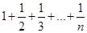
Write a program that compares the results of the summation of the preceding series, computing from left to right and from right to left with n = 50000.
<video note> Sum a series
*5.24 (Sum a series) Write a program to sum the following series:
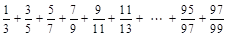
**5.25 (Compute ) You can approximate by using the following series:
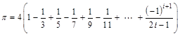
Write a program that displays the value for i = 10000, 20000, ..., and 100000.
**5.26 (Compute e) You can approximate e using the following series:
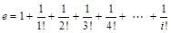
Write a program that displays the e value for i = 10000, 20000, ..., and 100000. (Hint: Because 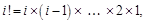 then
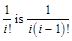
Initialize e and item to be 1 and keep adding a new item to e. The new item is the previous item divided by i for i = 2, 3, 4, ….)
**5.27 (Display leap years) Write a program that displays all the leap years, ten per line, from 101 to 2100, separated by exactly one space. Also display the number of leap years in this period.
**5.28 (Display the first days of each month) Write a program that prompts the user to enter the year and first day of the year, and displays the first day of each month in the year. For example, if the user entered the year 2013, and 2 for Tuesday, January 1, 2013, your program should display the following output:
January 1, 2013 is Tuesday
...
December 1, 2013 is Sunday
**5.29 (Display calendars) Write a program that prompts the user to enter the year and first day of the year and displays the calendar table for the year on the console. For example, if the user entered the year 2013, and 2 for Tuesday, January 1, 2013, your program should display the calendar for each month in the year, as follows:
<trace program>
|
January 2013 |
||||||
|
Sun |
Mon |
Tue |
Wed |
Thu |
Fri |
Sat |
|
|
|
1 |
2 |
3 |
4 |
5 |
|
6 |
7 |
8 |
9 |
10 |
11 |
12 |
|
13 |
14 |
15 |
16 |
17 |
18 |
19 |
|
20 |
21 |
22 |
23 |
24 |
25 |
26 |
|
27 |
28 |
29 |
30 |
31 |
|
|
<end trace program>
<trace program>
|
December 2013 |
||||||
|
Sun |
Mon |
Tue |
Wed |
Thu |
Fri |
Sat |
|
1 |
2 |
3 |
4 |
5 |
6 |
7 |
|
8 |
9 |
10 |
11 |
12 |
13 |
14 |
|
15 |
16 |
17 |
18 |
19 |
20 |
21 |
|
22 |
23 |
24 |
25 |
26 |
27 |
28 |
|
29 |
30 |
31 |
|
|
|
|
<end trace program>
*5.30 (Financial application: compound value) Suppose you save $100 each month into a savings account with the annual interest rate 5%. So, the monthly interest rate is 0.05 / 12 = 0.00417. After the first month, the value in the account becomes
100 * (1 + 0.00417) = 100.417
After the second month, the value in the account becomes
(100 + 100.417) * (1 + 0.00417) = 201.252
After the third month, the value in the account becomes
(100 + 201.252) * (1 + 0.00417) = 302.507
and so on.
Write a program that prompts the user to enter an amount (e.g., 100), the annual interest rate (e.g., 5), and the number of months (e.g., 6) and displays the amount in the savings account after the given month.
*5.31 (Financial application: compute CD value) Suppose you put $10,000 into a CD with an annual percentage yield of 5.75%. After one month, the CD is worth
10000 + 10000 * 5.75 / 1200 = 10047.92
After two months, the CD is worth
10047.91 + 10047.91 * 5.75 / 1200 = 10096.06
After three months, the CD is worth
10096.06 + 10096.06 * 5.75 / 1200 = 10144.44
and so on.
Write a program that prompts the user to enter an amount (e.g., 10000), the annual percentage yield (e.g., 5.75), and the number of months (e.g., 18) and displays a table as shown in the sample run.
<output>
Enter the initial deposit amount: 10000 <enter icon>
Enter annual percentage yield: 5.75 <enter icon>
Enter maturity period (number of months): 18 <enter icon>
Month CD Value
1 10047.92
2 10096.06
...
17 10846.57
18 10898.54
<end output>
**5.32 (Game: lottery) Revise Listing 3.8, Lottery.java, to generate a lottery of a two-digit number. The two digits in the number are distinct. (Hint: Generate the first digit. Use a loop to continuously generate the second digit until it is different from the first digit.)
**5.33 (Perfect number) A positive integer is called a perfect number if it is equal to the sum of all of its positive divisors, excluding itself. For example, 6 is the first perfect number because 6 = 3 + 2 + 1. The next is 28 = 14 + 7 + 4 + 2 + 1. There are four perfect numbers less than 10,000. Write a program to find all these four numbers.
***5.34 (Game: scissor, rock, paper) Programming Exercise 3.17 gives a program that plays the scissor-rock-paper game. Revise the program to let the user continuously play until either the user or the computer wins more than two times than its opponent.
*5.35 (Summation) Write a program to compute the following summation.
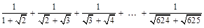
**5.36 (Business application: checking ISBN) Use loops to simplify <OLINK>Programming Exercise 3.9.
**5.37 (Decimal to binary) Write a program that prompts the user to enter a decimal integer and displays its corresponding binary value. Don’t use Java’s Integer.toBinaryString(int) in this program.
**5.38 (Decimal to octal) Write a program that prompts the user to enter a decimal integer and displays its corresponding octal value. Don’t use Java’s Integer.toOctalString(int) in this program.
*5.39 (Financial application: find the sales amount) You have just started a sales job in a department store. Your pay consists of a base salary and a commission. The base salary is $5,000. The scheme shown below is used to determine the commission rate.
<trace program>
|
Sales Amount |
Commission Rate |
|
$0.01–$5,000 |
8 percent |
|
$5,000.01–$10,000 |
10 percent |
|
$10,000.01 and above |
12 percent |
<end trace program>
Note that this is a graduated rate. The rate for the first $5,000 is at 8%, the next $5000 is at 10%, and the rest is at 12%. If the sales amount is 25,000, the commission is 5,000 * 8% + 5,000 * 10% + 15,000 * 12% = 2,700.
Your goal is to earn $30,000 a year. Write a program that finds out the minimum number of sales you have to generate in order to make $30,000.
5.40 (Simulation: heads or tails) Write a program that simulates flipping a coin one million times and displays the number of heads and tails.
*5.41 (Occurrence of max numbers) Write a program that reads integers, finds the largest of them, and counts its occurrences. Assume that the input ends with number 0. Suppose that you entered 3 5 2 5 5 5 0; the program finds that the largest is 5 and the occurrence count for 5 is 4.
(Hint: Maintain two variables, max and count. max stores the current max number, and count stores its occurrences. Initially, assign the first number to max and 1 to count. Compare each subsequent number with max. If the number is greater than max, assign it to max and reset count to 1. If the number is equal to max, increment count by 1.)
<output>
Enter numbers: 3 5 2 5 5 5 0 <enter icon>
The largest number is 5
The occurrence count of the largest number is 4
<end output>
*5.42 (Financial application: find the sales amount) Rewrite Programming Exercise 5.39 as follows:
§ Use a for loop instead of a do-while loop.
§ Let the user enter COMMISSION_SOUGHT instead of fixing it as a constant.
*5.43 (Math: combinations) Write a program that displays all possible combinations for picking two numbers from integers 1 to 7. Also display the total number of all combinations.
<output>
1 2
1 3
...
...
The total number of all combinations is 21
<end output>
*5.44 (Computer architecture: bit-level operations) A short value is stored in 16 bits. Write a program that prompts the user to enter a short integer and displays the 16 bits for the integer. Here are sample runs:
<output>
Enter an integer: 5 <enter icon>
The bits are 0000000000000101
<end output>
<output>
Enter an integer: -5 <enter icon>
The bits are 1111111111111011
<end output>
(Hint: You need to use the bitwise right shift operator (>>) and the bitwise AND operator (&), which are covered in Appendix G, Bitwise Operations.)
**5.45 (Statistics: compute mean and standard deviation) In business applications, you are often asked to compute the mean and standard deviation of data. The mean is simply the average of the numbers. The standard deviation is a statistic that tells you how tightly all the various data are clustered around the mean in a set of data. For example, what is the average age of the students in a class? How close are the ages? If all the students are the same age, the deviation is 0.
Write a program that prompts the user to enter ten numbers, and displays the mean and standard deviations of these numbers using the following formula:
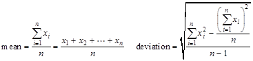
Here is a sample run:
<output>
Enter ten numbers: 1 2 3 4.5 5.6 6 7 8 9 10 <enter icon>
The mean is 5.61
The standard deviation is 2.99794
<end output>
*5.46 (Reverse a string) Write a program that prompts the user to enter a string and displays the string in reverse order.
<Sample run>
Enter a string: ABCD<enter icon>
The reversed string is DCBA
<End Sample run >
*5.47 (Business: check ISBN-13) ISBN-13 is a new standard for indentifying books. It uses 13 digits 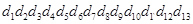. The last digit 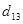 is a checksum, which is calculated from the other digits using the following formula:
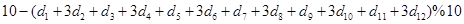
If the checksum is 10, replace it with 0. Your program should read the input as a string. Here are sample runs:
<Sample run>
Enter the first 12 digits of an ISBN-13 as a string: 978013213080<enter icon>
The ISBN-13 number is 9780132130806
<End Sample run >
<Sample run>
Enter the first 12 digits of an ISBN-13 as a string: 978013213079<enter icon>
The ISBN-13 number is 9780132130790
<End Sample run>
<Sample run>
Enter the first 12 digits of an ISBN-13 as a string: 97801320<enter icon>
97801320 is an invalid input
<End Sample run >
*5.48 (Process string) Write a program that prompts the user to enter a string and displays the characters at odd positions. Here is a sample run:
<Sample run>
Enter a string: Beijing Chicago<enter icon>
BiigCiao
<End Sample run >
*5.49 (Count vowels and consonants) Assume letters A, E, I, O, and U as the vowels. Write a program that prompts the user to enter a string and displays the number of vowels and consonants in the string.
<Sample run>
Enter a string: Programming is fun<enter icon>
The number of vowels is 5
The number of consonants is 11
<End Sample run >
*5.50 (Count uppercase letters) Write a program that prompts the user to enter a string and displays the number of the uppercase letters in the string.
<Output>
Enter a string: Welcome to Java <enter icon>
The number of uppercase letters is 2
<End Output>
*5.51 (Longest common prefix) Write a program that prompts the user to enter two strings and displays the largest common prefix of the two strings. Here are some sample runs:
<Sample run>
Enter the first string: Welcome to C++ <enter icon>
Enter the second string: Welcome to programming <enter icon>
The common prefix is Welcome to
<End Sample run >
<Sample run>
Enter the first string: Atlanta <enter icon>
Enter the second string: Macon <enter icon>
Atlanta and Macon have no common prefix
<End Sample run >